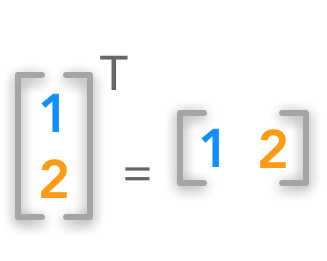
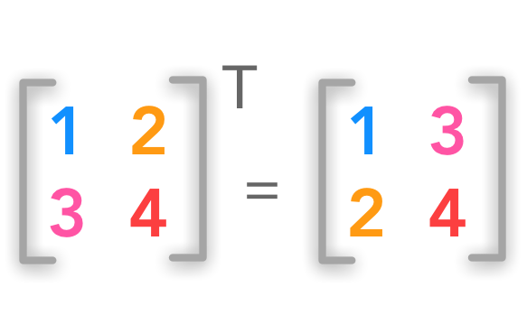
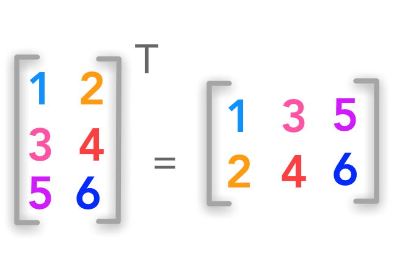
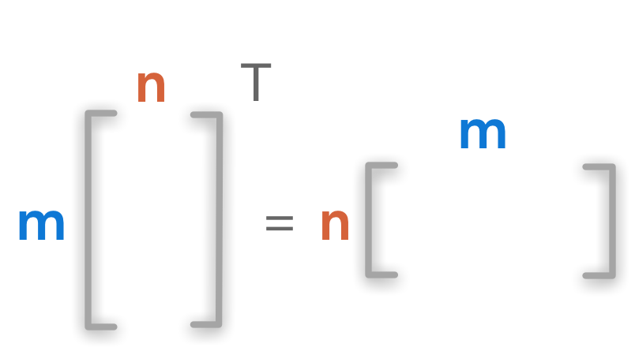
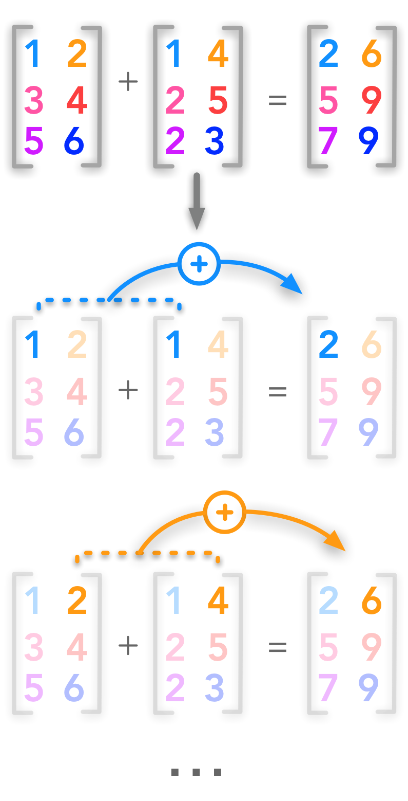

import numpy as np
2.1 Scalars, Vectors, Matrices and Tensors#
Introduction#
This first chapter is quite light and concerns the basic elements used in linear algebra and their definitions. It also introduces important functions in Python/Numpy that we will use all along this series. It will explain how to create and use vectors and matrices through examples.
Let’s start with some basic definitions:
 Difference between a scalar, a vector, a matrix and a tensor
Difference between a scalar, a vector, a matrix and a tensor
A scalar is a single number or a matrix with a single entry.
A vector is a 1-d array of numbers. Another way to think of vectors is identifying points in space with each element giving the coordinate along a different axis.
A matrix is a 2-D array where each element is identified by two indices (ROW then COLUMN).
A tensor is a \(n\)-dimensional array with \(n>2\)
We will follow the conventions used in the Deep Learning Book:
scalars are written in lowercase and italics. For instance: \(n\)
vectors are written in lowercase, italics and bold type. For instance: \(\bs{x}\)
matrices are written in uppercase, italics and bold. For instance: \(\bs{X}\)
Example 1.#
Create a vector with Python and Numpy#
Coding tip: Unlike the matrix() function which necessarily creates \(2\)-dimensional matrices, you can create \(n\)-dimensionnal arrays with the array() function. The main advantage to use matrix() is the useful methods (conjugate transpose, inverse, matrix operations…). We will use the array() function in this series.
We will start by creating a vector. This is just a \(1\)-dimensional array:
x = np.array([1, 2, 3, 4])
x
array([1, 2, 3, 4])
Example 2.#
Create a (3x2) matrix with nested brackets#
The array() function can also create \(2\)-dimensional arrays with nested brackets:
A = np.array([[1, 2], [3, 4], [5, 6]])
A
array([[1, 2],
[3, 4],
[5, 6]])
Shape#
The shape of an array (that is to say its dimensions) tells you the number of values for each dimension. For a \(2\)-dimensional array it will give you the number of rows and the number of columns. Let’s find the shape of our preceding \(2\)-dimensional array A. Since A is a Numpy array (it was created with the array() function) you can access its shape with:
A.shape
(3, 2)
We can see that \(\bs{A}\) has 3 rows and 2 columns.
Let’s check the shape of our first vector:
x.shape
(4,)
As expected, you can see that \(\bs{x}\) has only one dimension. The number corresponds to the length of the array:
len(x)
4
Transposition#
With transposition you can convert a row vector to a column vector and vice versa:

Vector transposition
The transpose \(\bs{A}^{\text{T}}\) of the matrix \(\bs{A}\) corresponds to the mirrored axes. If the matrix is a square matrix (same number of columns and rows):

Square matrix transposition
If the matrix is not square the idea is the same:

Non-square matrix transposition
The superscript \(^\text{T}\) is used for transposed matrices.
The shape (\(m \times n\)) is inverted and becomes (\(n \times m\)).

Dimensions of matrix transposition
Example 3.#
Create a matrix A and transpose it#
A = np.array([[1, 2], [3, 4], [5, 6]])
A
array([[1, 2],
[3, 4],
[5, 6]])
A_t = A.T
A_t
array([[1, 3, 5],
[2, 4, 6]])
We can check the dimensions of the matrices:
A.shape
(3, 2)
A_t.shape
(2, 3)
We can see that the number of columns becomes the number of rows with transposition and vice versa.
Addition#

Addition of two matrices
Matrices can be added if they have the same shape:
Each cell of \(\bs{A}\) is added to the corresponding cell of \(\bs{B}\):
\(i\) is the row index and \(j\) the column index.
The shape of \(\bs{A}\), \(\bs{B}\) and \(\bs{C}\) are identical. Let’s check that in an example:
Example 4.#
Create two matrices A and B and add them#
With Numpy you can add matrices just as you would add vectors or scalars.
A = np.array([[1, 2], [3, 4], [5, 6]])
A
array([[1, 2],
[3, 4],
[5, 6]])
B = np.array([[2, 5], [7, 4], [4, 3]])
B
array([[2, 5],
[7, 4],
[4, 3]])
# Add matrices A and B
C = A + B
C
array([[ 3, 7],
[10, 8],
[ 9, 9]])
It is also possible to add a scalar to a matrix. This means adding this scalar to each cell of the matrix.
Example 5.#
Add a scalar to a matrix#
A
array([[1, 2],
[3, 4],
[5, 6]])
# Exemple: Add 4 to the matrix A
C = A+4
C
array([[ 5, 6],
[ 7, 8],
[ 9, 10]])
Broadcasting#
Numpy can handle operations on arrays of different shapes. The smaller array will be extended to match the shape of the bigger one. The advantage is that this is done in C under the hood (like any vectorized operations in Numpy). Actually, we used broadcasting in the example 5. The scalar was converted in an array of same shape as \(\bs{A}\).
Here is another generic example:
is equivalent to
where the (\(3 \times 1\)) matrix is converted to the right shape (\(3 \times 2\)) by copying the first column. Numpy will do that automatically if the shapes can match.
Example 6.#
Add two matrices of different shapes#
A = np.array([[1, 2], [3, 4], [5, 6]])
A
array([[1, 2],
[3, 4],
[5, 6]])
B = np.array([[2], [4], [6]])
B
array([[2],
[4],
[6]])
# Broadcasting
C=A+B
C
array([[ 3, 4],
[ 7, 8],
[11, 12]])
You can find basics operations on matrices simply explained here.
Coding tip: Sometimes row or column vectors are not in proper shape for broadcasting. We need to imploy a trick ( anumpy.newaxis object) to help fix this issue.
x = np.arange(4)
x.shape
(4,)
# Adds a new dimension
x[:, np.newaxis]
array([[0],
[1],
[2],
[3]])
A = np.random.randn(4,3)
A
array([[ 1.85316855, 0.5697912 , 0.19356843],
[-0.27118831, 1.08057327, 0.50225431],
[-1.4906832 , 1.3897771 , -1.25708973],
[-0.7279187 , -0.77187513, 1.04552533]])
# This will throw an error
try:
A - x
except ValueError:
print("Operation cannot be completed. Dimension mismatch")
Operation cannot be completed. Dimension mismatch
# But this works -- subtract each column of A by the column vector x
A - x[:, np.newaxis]
array([[ 1.85316855, 0.5697912 , 0.19356843],
[-1.27118831, 0.08057327, -0.49774569],
[-3.4906832 , -0.6102229 , -3.25708973],
[-3.7279187 , -3.77187513, -1.95447467]])